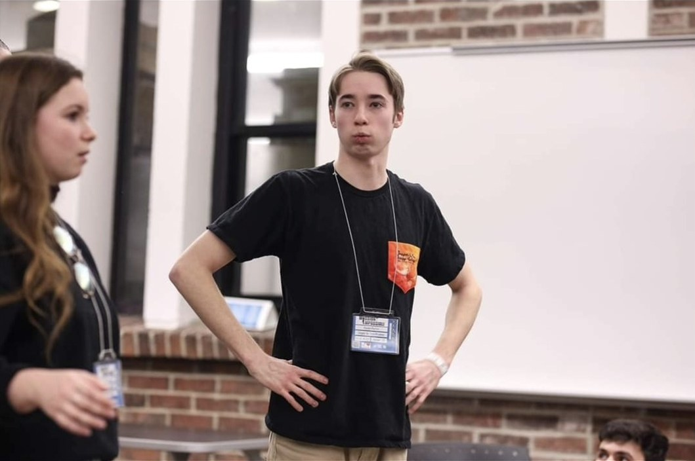
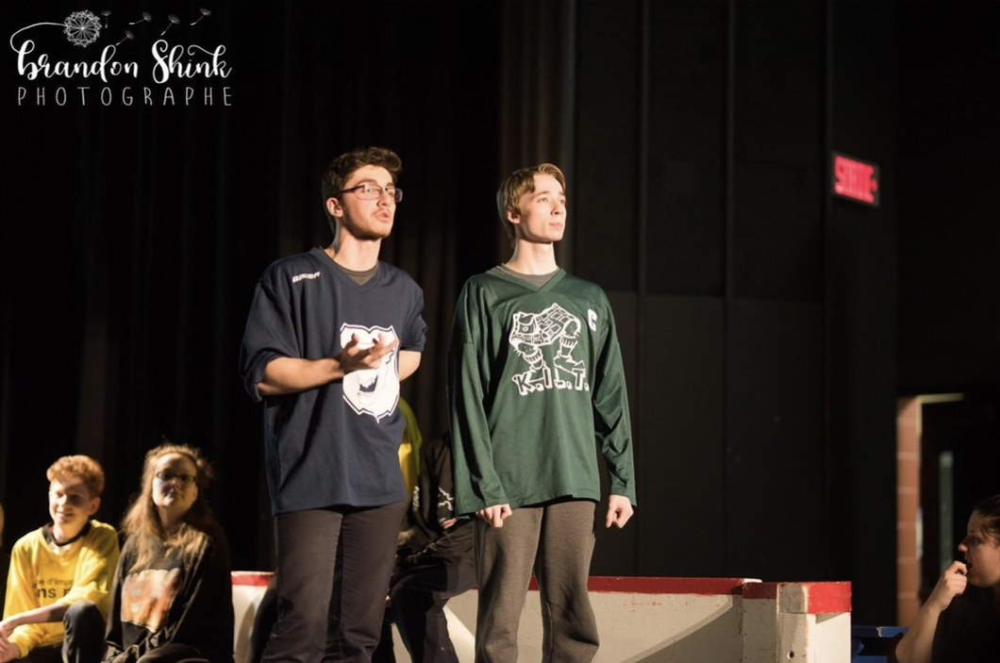

Qui suis-je ?
Apprendre auprès de quelqu'un qui a fait ses preuves.
Je suis Keven Perron, improvisateur, comédien et créateur de contenu humoristique connu sous le nom de Kevik.
L'improvisation fait partie de mon parcours depuis plusieurs années. Au fil de mon cheminement, j'ai eu l'occasion de me démarquer sur différentes scènes et de recevoir plusieurs distinctions qui témoignent de mes aptitudes et de mon travail.
Parmi mes reconnaissances, on retrouve notamment :
- joueur par excellence de plusieurs ligues
- joueur puncheur de plusieurs ligues
- joueur étoile
- beaucoup de trophées, et plusieurs autres.
Ces expériences m'ont permis de développer une compréhension approfondie de l'improvisation sous toutes ses formes, autant sur le plan technique que pratique.
Mon objectif est simple : vous transmettre ce que j'ai appris et ce qu'on m'a appris. Je vous donnerai donc des outils concrets pour vous aider à repousser vos limites et vous permettre de développer votre plein potentiel.


Prêt à trouver l'étoile en vous ?
Discutons de vos objectifs et construisons ensemble une formation adaptée à vos besoins.
Me contacter